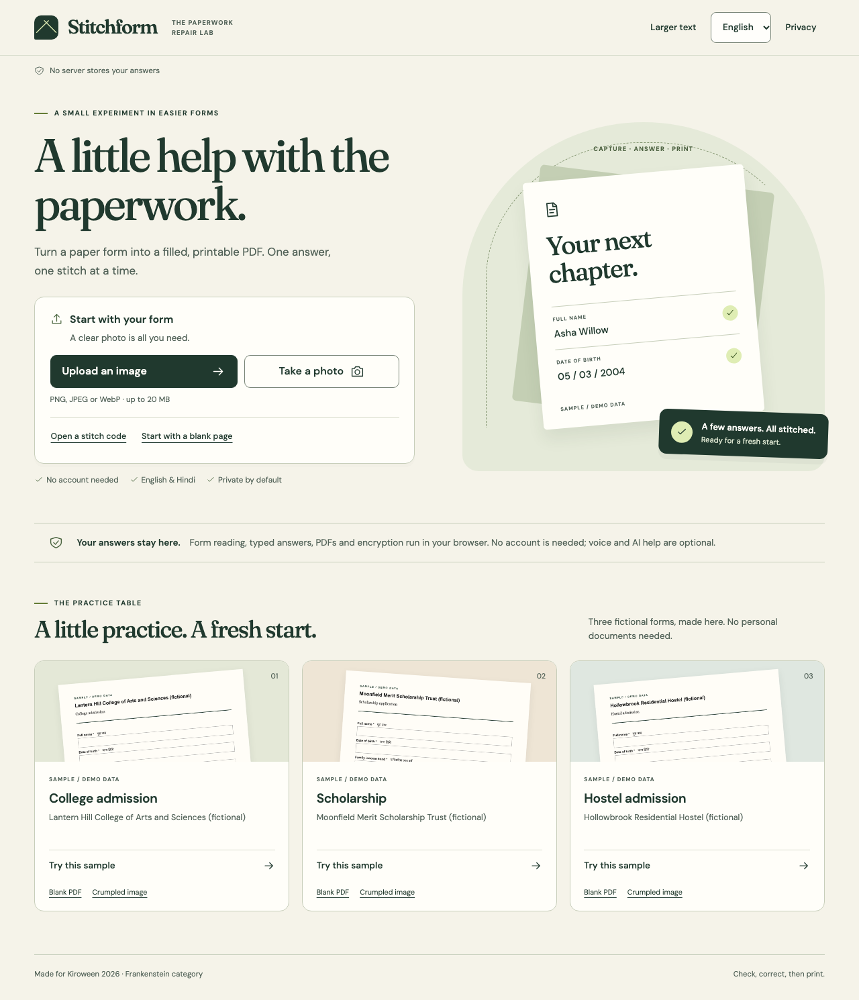
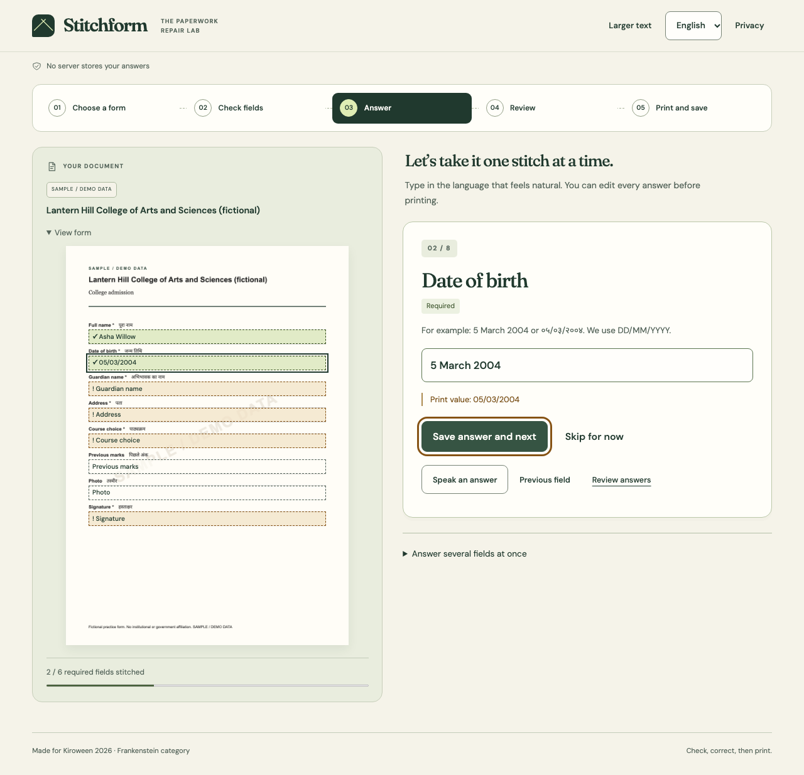
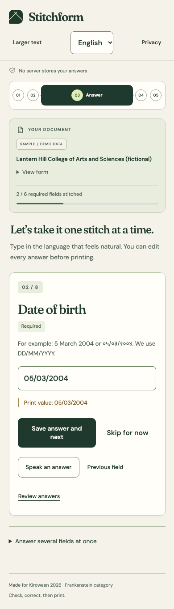
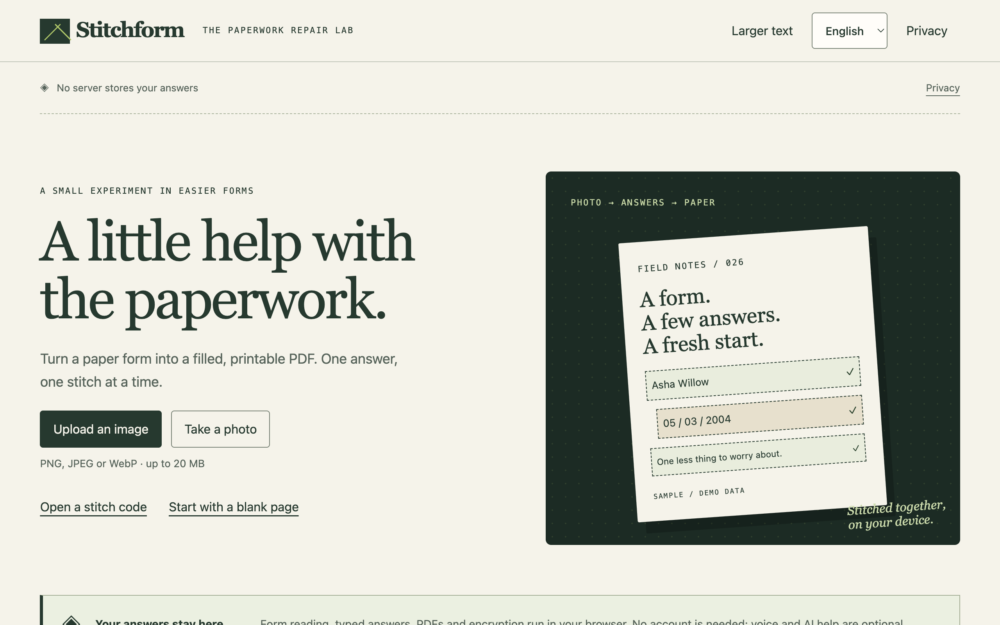

<!doctype html>
<html lang="en">
  <meta charset="utf-8" /><meta
    name="viewport"
    content="width=device-width,initial-scale=1"
  /><style>
    nav {
      display: flex;
      flex-wrap: wrap;
      gap: 8px;
      margin: 0 0 12px;
    }
    button {
      font: inherit;
      font-size: 13px;
      padding: 8px 14px;
      min-height: 38px;
      border: 1px solid var(--border, #d0d6cd);
      border-radius: var(--radius, 8px);
      background: transparent;
      color: var(--foreground, #20392e);
      cursor: pointer;
    }
    button[aria-pressed="true"] {
      background: var(--primary, #20392e);
      color: var(--primary-foreground, #fff);
    }
    button:focus-visible {
      outline: 3px solid var(--ring, #865315);
      outline-offset: 2px;
    }
    figure {
      margin: 0;
    }
    .capture {
      height: 540px;
      overflow: auto;
      border: 1px solid var(--border, #d0d6cd);
      border-radius: var(--radius, 8px);
      background: var(--card, #fff);
      padding: 12px;
    }
    img {
      width: 100%;
      height: auto;
      display: block;
      border-radius: 4px;
    }
    .mobile img {
      max-width: 350px;
      margin: auto;
    }
    figcaption {
      font-size: 13px;
      line-height: 1.6;
      color: var(--muted-foreground, #536359);
      margin-top: 10px;
    }
    [hidden] {
      display: none !important;
    }
    body {
      margin: 0;
      font-family: var(--font-sans, system-ui);
      color: var(--foreground, #20392e);
    }
  </style>
  <nav aria-label="Redesign views">
    <button aria-pressed="true" data-view="entry">Entry</button
    ><button aria-pressed="false" data-view="answer">Answer</button
    ><button aria-pressed="false" data-view="mobile">Mobile</button
    ><button aria-pressed="false" data-view="before">Before</button>
  </nav>
  <figure id="entry">
    <div class="capture">
      
    </div>
    <figcaption>
      Common region: the first action, file formats and returning-user links
      stay together.
    </figcaption>
  </figure>
  <figure id="answer" hidden>
    <div class="capture">
      
    </div>
    <figcaption>
      Figure-ground and continuity: the active question stands apart from the
      original paper, with one connected path above.
    </figcaption>
  </figure>
  <figure id="mobile" class="mobile" hidden>
    <div class="capture">
      
    </div>
    <figcaption>
      Proximity and similarity carry through to mobile. All screens show
      fictional demo data.
    </figcaption>
  </figure>
  <figure id="before" hidden>
    <div class="capture">
      
    </div>
    <figcaption>
      The preceding local interface, captured before this redesign.
    </figcaption>
  </figure>
  <script>
    for (const button of document.querySelectorAll("nav button"))
      button.onclick = () => {
        for (const other of document.querySelectorAll("nav button"))
          other.setAttribute("aria-pressed", String(other === button));
        for (const figure of document.querySelectorAll("figure"))
          figure.hidden = figure.id !== button.dataset.view;
      };
  </script>
</html>
